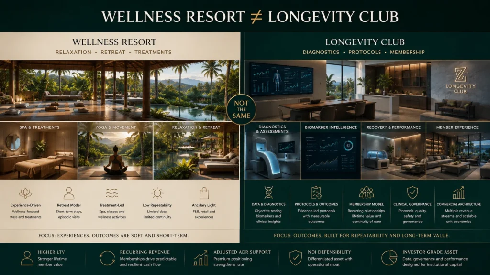
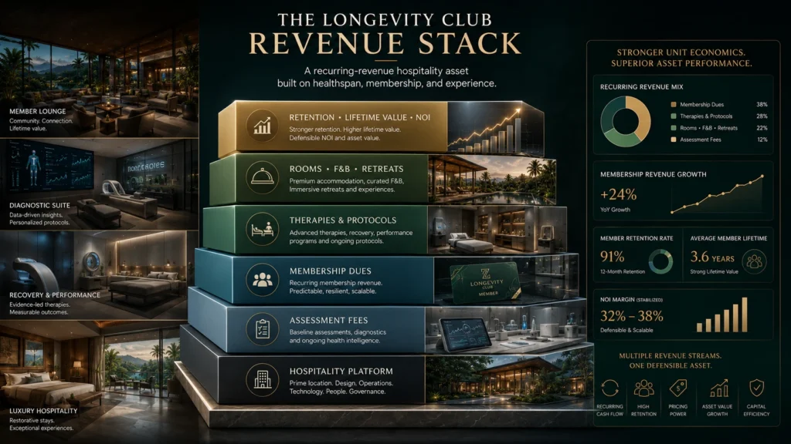
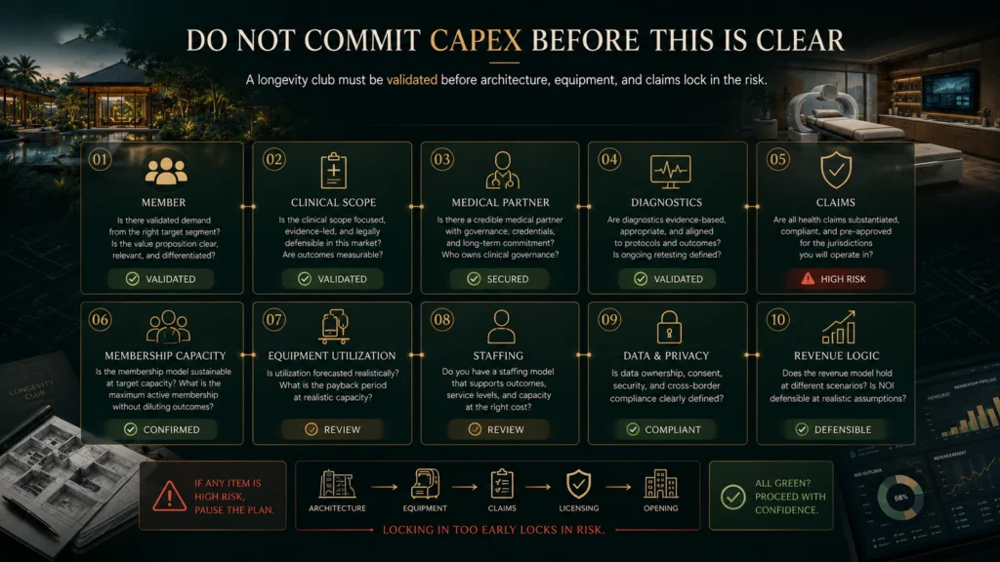

Most Bali properties using the word “longevity” are not a longevity club hospitality asset. In many cases, they are wellness resorts, spas, recovery rooms, or biohacking lounges with more expensive language.
For owners and investors, that distinction matters. A true longevity club is not sold like a spa treatment, and it does not operate like a short retreat. Instead, it functions as a structurally different hospitality asset: part preventive-health platform, part private club, part clinical-wellness operating system, and part premium hospitality product.
The commercial opportunity is real, but the model must be built correctly. The Global Wellness Institute reports that the global wellness economy reached US$6.8 trillion in 2024 and projects it to reach US$9.8 trillion by 2029. At the same time, Bali now has a stronger health-tourism anchor through the Sanur Special Economic Zone and Bali International Hospital.
However, many hospitality developers still treat longevity as an amenity. That is the wrong starting point. Longevity should be treated as a business model.
Key Takeaways
- A longevity club is not a spa, retreat, or recovery lounge. It requires diagnostics, clinical governance, evidence-led protocols, and ongoing member relationships.
- Bali’s Sanur Health SEZ and Bali International Hospital create stronger infrastructure for medical-wellness hospitality. However, infrastructure alone does not make every wellness project credible.
- The core revenue logic is membership-led: baseline assessments, recurring dues, protocol follow-up, add-on therapies, hospitality spend, and long-term member retention.
- The biggest owner-side risks are overpromising health outcomes, buying expensive equipment without utilization logic, and building spaces before the clinical and commercial model is clear.
- For investors, the question is not “Can we add longevity?” The better question is “Can this asset support a defensible longevity operating model?”
Why This Topic Matters Now
Longevity has moved from a niche wellness idea into a premium consumer category. High-net-worth guests, executives, founders, retirees, and health-conscious families are no longer only asking for massages, yoga, and detox menus. Increasingly, they are asking for data, prevention, biomarkers, recovery, sleep, metabolic health, hormone balance, inflammation control, and measurable healthspan improvement.
This shift is not happening in isolation. The Global Wellness Institute’s 2025 Global Wellness Economy Monitor shows continued expansion across the wellness economy, with the market reaching a new peak of US$6.8 trillion in 2024.
For Bali, the timing is important. BPS Bali reported 6,948,754 direct foreign tourist arrivals in January - December 2025, a 9.72 percent increase compared with 2024. This does not mean every visitor is a longevity buyer. Still, it confirms that Bali already has global demand flow, brand awareness, long-stay appeal, and a premium wellness perception. With the right model, those conditions can support more specialized health-oriented products.
Sanur adds another layer. Indonesia’s official SEZ platform describes Sanur SEZ as a health and tourism Special Economic Zone across 41.26 hectares. In addition, Bali International Hospital states that its facilities include 255 beds, 38 intensive care units, eight operating rooms, four catheterization labs, and five Centers of Excellence.
As a result, Bali’s hospitality context is changing. The island is no longer only a yoga, surf, villa, and spa destination. It is starting to build the infrastructure for medical-wellness tourism.
This article also builds on Zenith’s earlier analysis of biohacking wellness investment in Bali, where the core issue was already clear: equipment alone does not create investment value. The same logic applies here. A longevity club becomes commercially defensible only when the product, guest, operating model, clinical boundary, pricing logic, and utilization plan are aligned before CAPEX is committed.
What Is a Longevity Club Hospitality Asset?
A longevity club hospitality asset is a membership-oriented hospitality and preventive-health platform that helps members assess, monitor, and improve healthspan-related markers through diagnostics, clinical oversight, personalized protocols, and ongoing lifestyle support.
In practice, a credible longevity club usually includes six layers:
| Layer | What It Means |
|---|---|
| Diagnostics | Biomarker testing, blood panels, body composition, VO2 max, cardiovascular risk, sleep, metabolic health, imaging or partner diagnostics where appropriate. |
| Clinical Governance | Licensed medical oversight, scope-of-practice control, consent, safety standards, referral pathways, medical records, and claims discipline. |
| Protocol Design | Personalized nutrition, movement, sleep, recovery, supplementation, therapy, and medical-wellness recommendations based on assessment data. |
| Membership Model | Recurring relationship, annual or monthly dues, reassessment cycles, included benefits, paid upgrades, and member retention systems. |
| Hospitality Experience | Premium environment, service rituals, privacy, F&B, recovery spaces, concierge flow, community programming, and guest comfort. |
| Data and Follow-Up | Progress tracking, retesting, coaching, dashboards, and long-term engagement. |
Therefore, a longevity club cannot be reduced to a treatment menu. It is an operating system.
For related context, Zenith has already explained why Bali longevity hospitality must be built around preventive health, diagnostics, recovery, and commercial discipline - not just better spa positioning.
Wellness Resort vs Longevity Club
Many wellness resorts help guests feel better during a stay. A longevity club must do something more complex: create an ongoing, measurable, clinically governed relationship with the member’s health.
| Category | Wellness Resort | Longevity Club |
| Core promise | Relaxation, reset, retreat, lifestyle improvement | Preventive health optimization and healthspan support |
| Primary transaction | Stay package or treatment purchase | Membership, assessment, protocol, retesting |
| Evidence base | Often mixed: spa, yoga, wellness, Ayurveda, detox | Must be evidence-led and clinically governed |
| Guest relationship | Short-stay experience | Ongoing member relationship |
| Revenue logic | Rooms, spa, F&B, retreat packages | Membership dues, diagnostics, therapies, coaching, hospitality spend |
| Risk level | Hospitality and wellness risk | Hospitality + medical + data + claims risk |
| Required governance | Spa SOPs and service standards | Clinical governance, scope control, medical partner logic |
| Asset defensibility | Brand, design, location, programming | Data, protocols, medical credibility, community, retention |
The mistake is assuming the difference is equipment. It is not.
Hyperbaric oxygen chambers, red-light panels, cold plunges, IV rooms, and body composition scanners do not create a longevity asset by themselves. Without a clinical model, utilization plan, member journey, and commercial architecture, they become expensive amenities.

Why Bali Is Becoming Relevant
Bali has three advantages.
First, it has demand flow. International arrivals have recovered strongly, and Bali remains one of Asia’s most recognized wellness destinations. BPS Bali’s 2025 arrivals data confirms the island’s continued international pull.
Second, it has destination psychology. Many people already associate Bali with reset, health, spirituality, nature, yoga, recovery, and life recalibration. That perception does not create a longevity club by itself. However, it lowers the education barrier.
Third, Sanur gives Bali a more serious medical-wellness anchor. Bali International Hospital was officially inaugurated in 2025, and the Indonesian Cabinet Secretariat described the hospital as having world-class facilities and integrated specialist services.
For developers, this matters because not every longevity asset should own all clinical infrastructure. A hotel or club may not need to buy every diagnostic device, build every lab, or employ every specialist directly. In many cases, the more investable model is a hospitality-led longevity club with licensed clinical partners, referral pathways, and clearly separated medical and non-medical scopes.
That is where Bali’s opportunity becomes interesting.
The Core Problem: Most “Longevity” Concepts Are Rebranded Wellness
The word “longevity” is becoming commercially attractive. Consequently, marketing often runs faster than operations.
A project adds a cold plunge, IV menu, red-light bed, NAD language, and a few age-related phrases. Then it calls itself a longevity concept.
That is not enough.
A credible longevity club must answer harder questions:
- Who is the medical director?
- Which services are medical, wellness, recovery, fitness, or hospitality?
- Which claims are allowed?
- Which diagnostics are done in-house versus through a licensed partner?
- Who interprets biomarker results?
- How often are members reassessed?
- What is included in membership?
- Which therapies are paid add-ons?
- How many members can the facility actually support?
- What happens if a member has abnormal results?
- How is medical data stored and protected?
- What is the emergency escalation pathway?
- What is the operator allowed to sell?
These are not branding questions. They are operating-model questions.
The Zenith View: Design the Commercial Model Before the Space
Zenith’s operator-first view is straightforward: a longevity club should not start with equipment, interior mood boards, or treatment menus. It should start with the commercial and clinical operating model.
This is the same principle behind hotel Product DNA: the owner must define the guest, product promise, spatial logic, service model, wellness role, and commercial thesis before the design becomes expensive to correct.
For a longevity club hospitality asset, the owner should define the product in this order:
- Target member - Who is the club for, and what health, lifestyle, travel, and spending profile do they have?
- Clinical scope - What is medical, what is wellness, and what must be partner-operated?
- Diagnostic depth - What baseline assessments justify the category?
- Membership architecture - What is included, what is limited, what is upsold, and what is retested?
- Capacity model - How many members can the rooms, devices, clinicians, coaches, and recovery areas serve?
- Protocol logic - How does assessment data turn into nutrition, movement, recovery, sleep, and medical-wellness recommendations?
- Hospitality experience - How does the member feel safe, private, guided, and recognized?
- Commercial controls - How does the model drive recurring revenue, ancillary spend, ADR support, retention, and long-term asset value?
Many projects fail at this stage. They build “premium wellness space” first and try to find the operating model later.
For longevity, that sequence is dangerous.
Global Benchmarks: What the Market Is Already Paying For
Global benchmarks show that longevity revenue is not built like spa revenue. Canyon Ranch’s LONGEVITY8 is useful as a premium reference point because it packages diagnostics, consultations, biomarkers, accommodation, meals, and structured programming into a high-ticket health-optimization product.
Life Time’s MIORA shows a more accessible subscription model. Reporting on the launch described a US$299 initial assessment and a US$199 monthly membership, with access to services such as red-light therapy, cryotherapy, infrared saunas, hyperbaric chamber access, and other medical-wellness services. Fitt Insider and other industry sources covered this structure when MIORA launched.
Surrenne at The Emory in London shows the luxury hotel-integrated membership model. The club positions itself as a luxury longevity and wellbeing destination, while The Emory connection shows how medical-wellness, private membership, and luxury hospitality can combine in one ecosystem. See Surrenne for its own positioning.
Love.Life in California shows the integrated medical, fitness, recovery, and wellness-club model. Its medical positioning describes functional medicine, advanced diagnostics, and a multidisciplinary team, including physicians, health coaches, physical therapists, dietitians, licensed counselors, and fitness trainers. See Love.Life Medical for the current description.
The lesson is not that Bali should copy global pricing. Instead, the lesson is that true longevity models monetize differently from spas:
| Model | Revenue Logic | Owner-Side Lesson |
| Premium retreat | High-ticket short-duration diagnostic programme | Works if clinical depth and exclusivity are credible. |
| Subscription medical wellness | Initial assessment + monthly dues + add-ons | Useful for mass-affluent or local/expat model. |
| Hotel-integrated private club | Joining fee + annual dues + hotel/F&B/spa synergy | Strong for luxury urban or destination club model. |
| Hybrid medical-fitness club | Medical team + training + recovery + café + community | Strong if member retention and utilization are managed. |
Clinical Governance Is Not Optional
Longevity clubs sit near the boundary between hospitality and healthcare. That means clinical governance is not a marketing extra. It is the risk-control system.
In healthcare, clinical governance refers to the framework through which organizations are accountable for improving service quality and safeguarding standards of care. For hospitality owners, the practical implication is simple: the more medical the claim, the stronger the governance must be.
For a longevity club, that has practical consequences:
- medical director or clinical lead;
- licensed practitioners;
- treatment scope and exclusion criteria;
- informed consent;
- adverse event procedures;
- referral pathways;
- emergency protocols;
- member data governance;
- claims review;
- periodic protocol review;
- staff training and competency control.
The Department of Health Abu Dhabi’s Healthy Longevity Medicine Clinic Standard is useful as an international benchmark because it sets minimum requirements for healthy longevity medicine clinic services and frames longevity medicine around health, wellness, disease prevention, and clinical service standards.
Bali projects do not need to copy Abu Dhabi’s regulatory model. Nevertheless, owners should understand the direction of travel: serious longevity medicine is becoming more standardized, more regulated, and more evidence-sensitive.
That is good for credible operators. It is dangerous for marketing-led projects.

The Commercial Architecture of a Longevity Club
A longevity club should be modeled as a recurring-revenue platform with high-trust member acquisition and controlled capacity.
1. Baseline Assessment Revenue
The first transaction should usually be a paid baseline assessment. This can include health questionnaires, blood work, body composition, fitness testing, sleep assessment, metabolic markers, and physician or clinician consultation where legally permitted.
This first step does more than generate revenue. It qualifies the member, creates the starting point, and gives the club a reason to design a personalized protocol.
2. Membership Revenue
Membership should be tiered, not unlimited by default.
Possible structure:
| Tier | Role |
| Essential | Baseline diagnostics, limited facility access, quarterly review, paid add-ons. |
| Performance | Diagnostics, coaching, recovery access, monthly protocol support, preferred booking. |
| Longevity Plus | Deeper assessments, physician-led review, advanced recovery allocation, priority access. |
| Founder / Private | Limited-capacity UHNW tier with concierge health coordination and hospitality privileges. |
The mistake is selling unlimited access before understanding capacity. A hyperbaric chamber, IV room, consultation room, or recovery suite can be oversold quickly.
3. Therapy and Add-On Revenue
Add-ons may include advanced lab panels, recovery therapies, IV services where licensed, body composition testing, movement assessments, sleep coaching, nutrition programmes, retreats, retail, supplements, and partner-referred diagnostics.
However, the offer must remain claims-controlled. Not every intervention should be positioned as a proven longevity treatment.
4. Hospitality Revenue
A hotel-integrated longevity club can support:
- premium room packages;
- longer stays;
- higher F&B capture;
- private dining or protocol menus;
- retreat-style programmes;
- partner stays;
- executive retreats;
- family-office wellness programmes;
- villa-owner memberships;
- resident and expat memberships.
In other words, the asset value comes from ecosystem logic, not from treatment revenue alone.
5. Retention Revenue
The most valuable longevity member is not the person who buys one expensive package. It is the person who returns every quarter, retests, adjusts protocols, attends events, brings a spouse, and trusts the club over time.
Therefore, retention requires coaching, data, community, and measurable progress.
Operational Implications
A longevity club changes the operating brief.
Space Planning
The project needs more than spa rooms. Depending on scope, it may need:
- consultation rooms;
- phlebotomy or sample collection area where licensed;
- recovery rooms;
- IV rooms where legally permitted;
- HBOT or recovery tech rooms;
- fitness assessment area;
- private changing and circulation;
- member lounge;
- protocol retail;
- healthy F&B integration;
- back-of-house for clinical storage and compliance;
- privacy-first data and consultation flow.
Staffing
The team cannot be built like a spa team only. Depending on scope, the model may require:
- medical director or licensed clinical partner;
- physicians or specialist consultants;
- nurses;
- physiotherapists;
- dietitians or nutritionists;
- health coaches;
- sports performance coaches;
- spa and recovery therapists;
- front office/member concierge;
- membership sales;
- data/admin coordinator;
- compliance oversight.
SOPs and Training
SOPs must cover more than service sequence. They need:
- clinical handover boundaries;
- member intake;
- contraindication screening;
- consent;
- escalation;
- privacy;
- cleaning and infection control where applicable;
- adverse event response;
- claims language;
- referral process;
- equipment maintenance;
- retesting cadence;
- member retention workflow.
Pre-Opening Governance
A longevity club should not open with “soft” governance. Before launch, owners need readiness gates:
- Medical scope confirmed.
- Licensed partner contracts signed.
- Clinical governance approved.
- Treatment claims reviewed.
- Membership capacity model completed.
- Pricing and benefit matrix approved.
- Equipment utilization model completed.
- Staff credentials verified.
- Insurance reviewed.
- Data/privacy handling approved.
- Emergency escalation rehearsed.
- Sales team trained on what they can and cannot claim.
Commercial Implications
The upside is significant, but only when the model is disciplined. A true longevity club hospitality asset must create value through recurring revenue, differentiated demand, controlled risk, and measurable operating logic - not through wellness vocabulary alone.
ADR Support
A credible longevity offer can strengthen rate logic for a resort or boutique hotel because it creates a reason to choose the property beyond design and location. However, ADR support only works when the longevity offer is real, not decorative.
Ancillary Revenue
Memberships, assessments, therapies, coaching, retail, F&B, and retreats create non-room revenue streams. This matters in Bali, where many boutique assets depend too heavily on room revenue.
Lower Seasonality Exposure
Local residents, expats, repeat travelers, corporate groups, and family offices can help reduce reliance on short-stay leisure demand.
Higher Guest Lifetime Value
A normal hotel guest may stay once. By contrast, a longevity member can create recurring annual revenue and repeat hospitality spend.
Asset-Value Story
For owners and investors, a properly governed longevity club can make the asset more defensible because it combines hospitality, community, healthcare-adjacent credibility, and recurring revenue. However, this only strengthens asset value if the model is documented, legally compliant, operationally stable, and financially measurable.
The CAPEX Trap
The biggest financial mistake is buying equipment before modeling utilization.
A hyperbaric chamber, cryotherapy system, diagnostic device, or recovery suite is not an investment thesis. It is a cost center until enough qualified members use it at the right price with the right staffing and maintenance structure.
Zenith’s owner-side test is simple:
If the equipment cannot be linked to member acquisition, retention, pricing power, therapy revenue, or protocol credibility, it should not be bought yet.
What To Do Before Committing Capital
Before committing capital to a longevity club, owners should complete a structured pre-development review. This review should sit alongside a proper Bali hotel feasibility study because longevity affects more than the wellness menu. It changes the space programme, staffing model, partner structure, claims risk, CAPEX logic, revenue architecture, and operating governance.
| Decision Area | Key Question |
| Market | Who will pay: tourists, expats, residents, executives, villa owners, family offices, or hotel guests? |
| Product | Is this a club, retreat, clinic, recovery lounge, or hotel amenity? |
| Clinical | Which services require licensed medical delivery? |
| Partner | Which hospital, clinic, lab, or medical partner anchors credibility? |
| Membership | What is included, limited, upgraded, and retested? |
| Space | What rooms are required before architecture freezes? |
| CAPEX | Which equipment is essential, optional, or unjustified? |
| Staffing | Who delivers medical, coaching, hospitality, and recovery layers? |
| Pricing | What can the target member pay, and what capacity supports it? |
| Risk | What claims, treatments, and data issues create liability? |
| Commercial | How does the model affect ADR, RevPAR, ancillary revenue, NOI, and asset value? |
If these questions are not answered, the project is not ready for full design development.

FAQ
Is a longevity club the same as a wellness resort?
No. A wellness resort usually focuses on relaxation, spa, movement, nutrition, mindfulness, and short-stay transformation. A longevity club requires a more serious operating model: baseline diagnostics, clinical governance, evidence-led protocols, retesting, member follow-up, and recurring revenue. A resort can contain a longevity club, but a resort does not become one by adding recovery equipment.
Can a hotel in Bali operate a longevity club without a hospital partner?
It depends on the scope. A hotel can operate hospitality, fitness, recovery, wellness, and non-medical programming. However, diagnostics, medical interpretation, IV services, hormones, peptides, and clinical interventions must be reviewed against Indonesian healthcare licensing requirements. In many cases, the safer structure is a hospitality-led club with licensed clinical partners.
Is the Sanur Health SEZ enough to make Bali a longevity destination?
No. The Sanur SEZ improves Bali’s medical-wellness infrastructure, but infrastructure alone does not create investable products. Owners still need concept clarity, clinical governance, operating systems, licensed partners, pricing architecture, member acquisition strategy, and capacity modelling. The SEZ is an enabler, not a substitute for product discipline.
What is the main revenue difference between a spa and a longevity club?
A spa is usually transaction-led: treatments, packages, and hotel guest spend. A longevity club hospitality asset is membership-led: paid assessments, recurring dues, retesting, coaching, protocol support, therapies, retail, events, and hospitality spend. Therefore, the commercial value is not only in the treatment room. It is in the long-term relationship with the member.
What should investors check first?
Investors should check whether the project has a real operating model before reviewing renders. The first questions should be: Who is the member? What is the clinical scope? Who is the medical partner? What is the membership structure? How many members can the asset serve? What CAPEX is justified? What claims are allowed? How does the model improve revenue and asset defensibility?
Can Zenith help design a longevity club concept?
Yes. Zenith Hospitality Global helps owners, developers, investors, and wellness entrepreneurs pressure-test longevity hospitality concepts from the commercial model outward. This includes Product DNA, membership architecture, clinical-partner logic, space planning, operating assumptions, pre-opening governance, and owner-side financial modelling.
Summary Takeaways
Longevity clubs are emerging as a serious premium hospitality category, but the category is also easy to misunderstand.
A real longevity club hospitality asset is not a spa with biohacking equipment. It is not a retreat with blood tests added. It is not a luxury hotel gym with a cold plunge.
Instead, it is a membership-based preventive-health hospitality model built around diagnostics, clinical governance, evidence-led protocols, continuous support, and commercial discipline.
Bali is well positioned because of its tourism demand, wellness perception, long-stay appeal, and the new medical-wellness infrastructure emerging in Sanur. However, Bali will not win this category through marketing language alone.
The winners will be the assets that can answer the hard owner-side questions: what is the product, who is the member, what is medically credible, what is legally allowed, what is commercially viable, and what can the operator actually deliver every day?
Related Zenith Reading
For owners and investors evaluating this category, these related Zenith resources provide useful context:
- Bali Longevity Hospitality: What Investors Must Build Next
- Biohacking Wellness Investment in Bali
- Hotel Product DNA: Why Your Project Needs One
- Bali Hotel Feasibility Study Before Design Starts
- Product DNA & Concept Development Articles
CTA
Before committing CAPEX to a longevity club hospitality asset, pressure-test the model.
Zenith Hospitality Global helps owners, developers, investors, and family offices design longevity hospitality assets from the commercial and operating model outward: Product DNA, clinical governance logic, membership architecture, space planning, pre-opening systems, and financial feasibility.
If you are planning a longevity club, wellness resort, medical-wellness asset, or recovery-led hospitality concept in Bali or Indonesia, speak with Zenith before the design is frozen.
Start a conversation